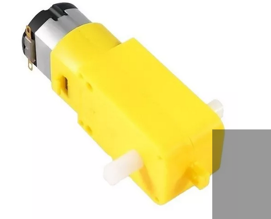

Relógio
Prof: Marcelo Vieira dos Santos
Um motor DC (Direct current) é um tipo de máquinas elétricas que converte energia elétrica de corrente contínua em energia mecânica.
Os tipos mais comuns dependem das forças produzidas por campos magnéticos.Tensão de funcionamento: 3 a 6 V.

Para uso deste tipo de motor usamos o conceito de polaridade onde a ligação
do fios é baseada nos conectores da fonte de energia sendo um positivo e o outro negativo,
este motor em especial é inversível isso faz com que se invertemos o negativo e positivo
teremos o ratação contrária
Nesta aula faremos um modelo circular como se fosse um relógio para definir no
motor DC um sentido horário e um anti-horário.